Kyiv claims Russian losses are at a war high: 54.2k in October and November on pace for 67k. Ukrainian General Staff daily tallies (killed and wounded), unverified. Hatched bar projects November at its daily rate so far. Source: https://russianwarship.rip/api/v2/statistics
Ransomware extortion is running at a record: November on pace for 1,471 victims, above August's 1,212. ransomware.live count of victims posted on criminal leak sites. Hatched bar projects November at its rate so far. Source: https://www.ransomware.live/
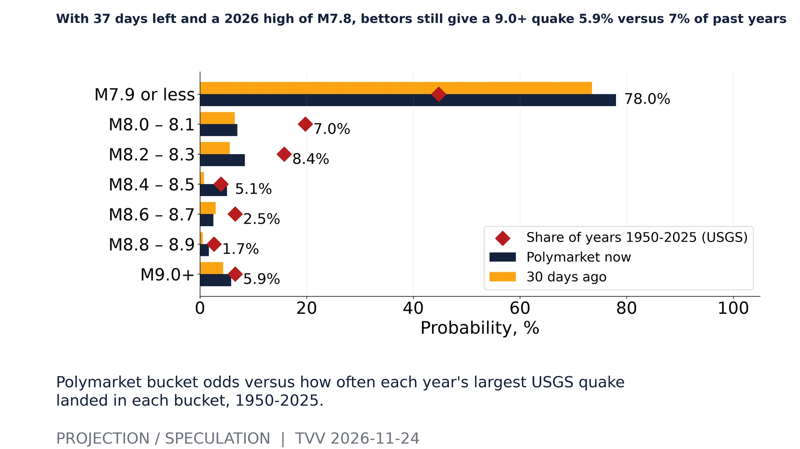
With 37 days left and a 2026 high of M7.8, bettors still give a 9.0+ quake 5.9% versus 7% of past years. Polymarket bucket odds versus how often each year's largest USGS quake landed in each bucket, 1950-2025. Source: https://polymarket.com/event/highest-earthquake-magnitude-in-2026
NOAA flags G1 storm days on Nov 27, Dec 4 as solar radio flux climbs to 135 sfu. NOAA SWPC 27-day outlook issued 2026 Nov 23 0153 UTC. Red bars = predicted Kp 5 (G1). Forecast, not observation. Source: https://services.swpc.noaa.gov/text/27-day-outlook.txt
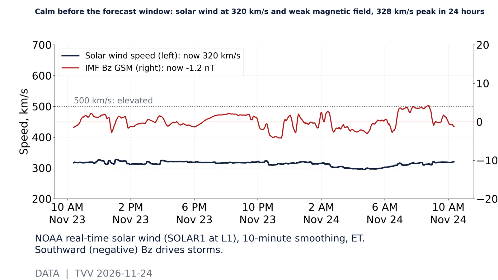
Calm before the forecast window: solar wind at 320 km/s and weak magnetic field, 328 km/s peak in 24 hours. NOAA real-time solar wind (SOLAR1 at L1), 10-minute smoothing, ET. Southward (negative) Bz drives storms. Source: https://services.swpc.noaa.gov/json/rtsw/rtsw_wind_1m.json
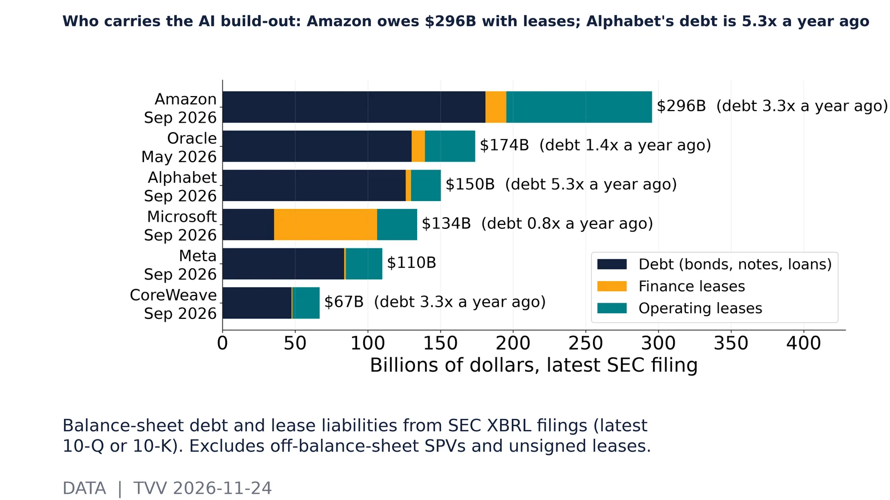
Who carries the AI build-out: Amazon owes $296B with leases; Alphabet's debt is 5.3x a year ago. Balance-sheet debt and lease liabilities from SEC XBRL filings (latest 10-Q or 10-K). Excludes off-balance-sheet SPVs and unsigned leases. Source: https://data.sec.gov/api/xbrl/companyfacts/CIK0001018724.json
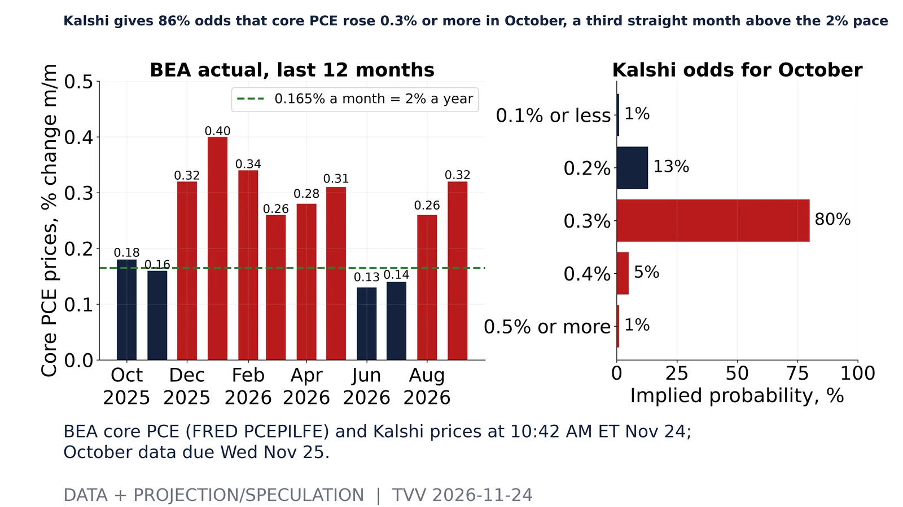
Kalshi gives 86% odds that core PCE rose 0.3% or more in October, a third straight month above the 2% pace. BEA core PCE (FRED PCEPILFE) and Kalshi prices at 10:42 AM ET Nov 24; October data due Wed Nov 25. Source: https://kalshi.com/markets/kxpcecore
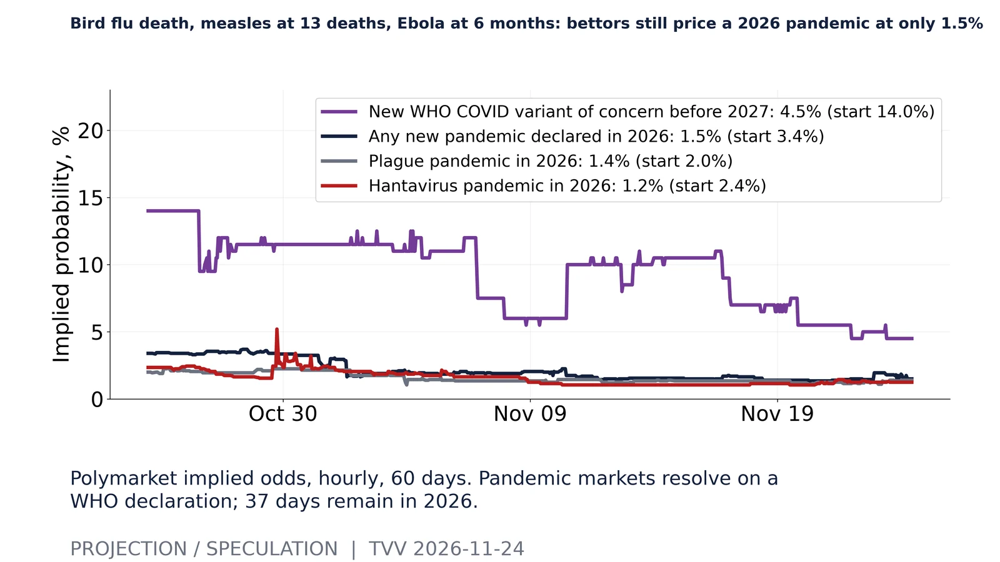
Bird flu death, measles at 13 deaths, Ebola at 6 months: bettors still price a 2026 pandemic at only 1.5%. Polymarket implied odds, hourly, 60 days. Pandemic markets resolve on a WHO declaration; 37 days remain in 2026. Source: https://polymarket.com/event/new-pandemic-in-2026
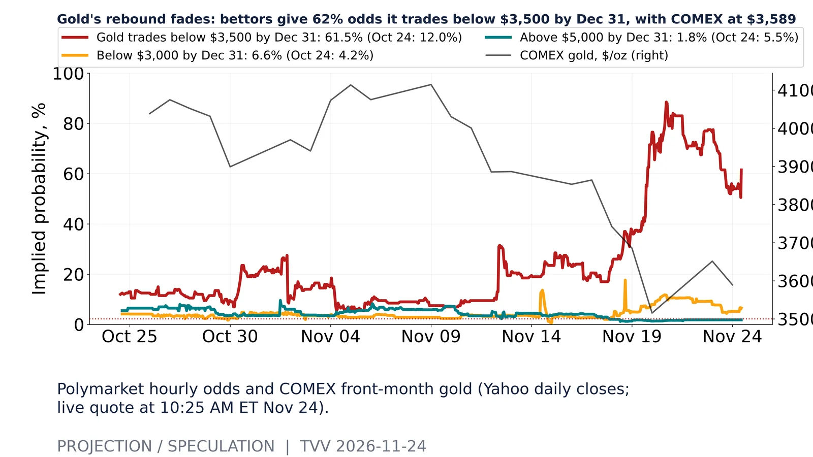
Gold's rebound fades: bettors give 62% odds it trades below $3,500 by Dec 31, with COMEX at $3,589. Polymarket hourly odds and COMEX front-month gold (Yahoo daily closes; live quote at 10:25 AM ET Nov 24). Source: https://polymarket.com/event/what-will-gold-gc-hit-by-end-of-december
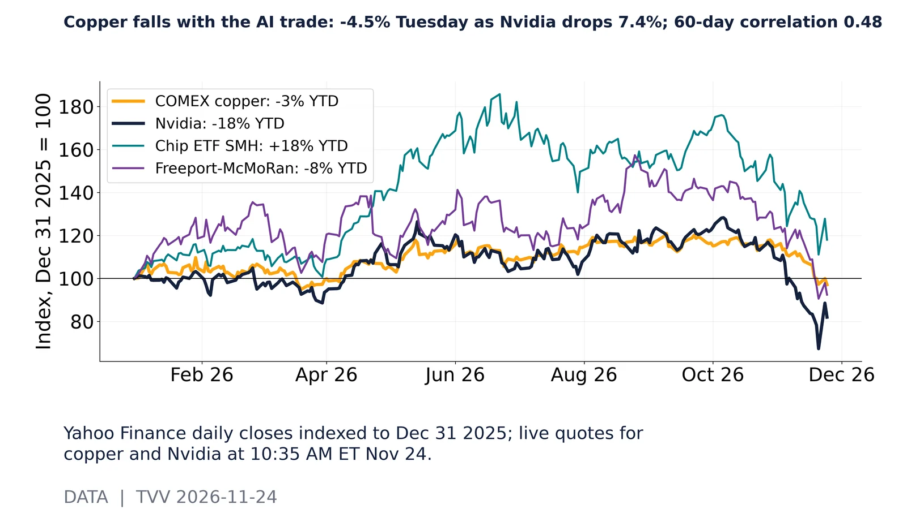
Copper falls with the AI trade: -4.5% Tuesday as Nvidia drops 7.4%; 60-day correlation 0.48. Yahoo Finance daily closes indexed to Dec 31 2025; live quotes for copper and Nvidia at 10:35 AM ET Nov 24. Source: https://finance.yahoo.com/quote/HG%3DF
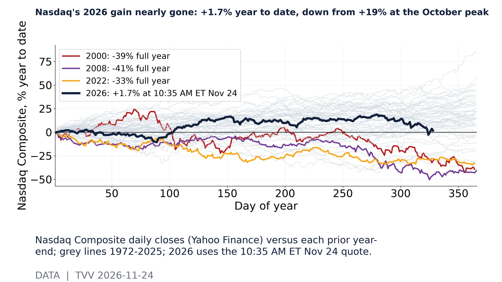
Nasdaq's 2026 gain nearly gone: +1.7% year to date, down from +19% at the October peak. Nasdaq Composite daily closes (Yahoo Finance) versus each prior year-end; grey lines 1972-2025; 2026 uses the 10:35 AM ET Nov 24 quote. Source: https://finance.yahoo.com/quote/%5EIXIC
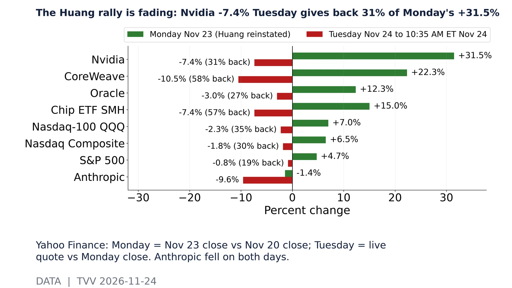
The Huang rally is fading: Nvidia -7.4% Tuesday gives back 31% of Monday's +31.5%. Yahoo Finance: Monday = Nov 23 close vs Nov 20 close; Tuesday = live quote vs Monday close. Anthropic fell on both days. Source: https://finance.yahoo.com/quote/NVDA
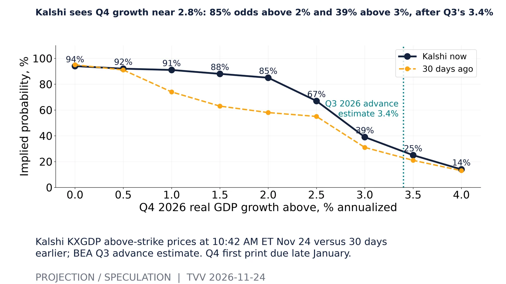
Kalshi sees Q4 growth near 2.8%: 85% odds above 2% and 39% above 3%, after Q3's 3.4%. Kalshi KXGDP above-strike prices at 10:42 AM ET Nov 24 versus 30 days earlier; BEA Q3 advance estimate. Q4 first print due late January. Source: https://kalshi.com/markets/kxgdp
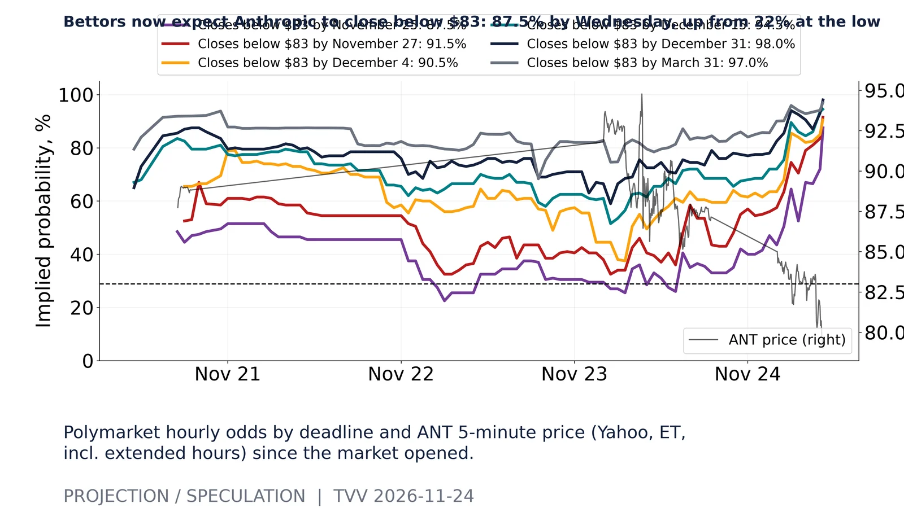
Bettors now expect Anthropic to close below $83: 87.5% by Wednesday, up from 22% at the low. Polymarket hourly odds by deadline and ANT 5-minute price (Yahoo, ET, incl. extended hours) since the market opened. Source: https://polymarket.com/event/anthropic-closes-below-ipo-price-by
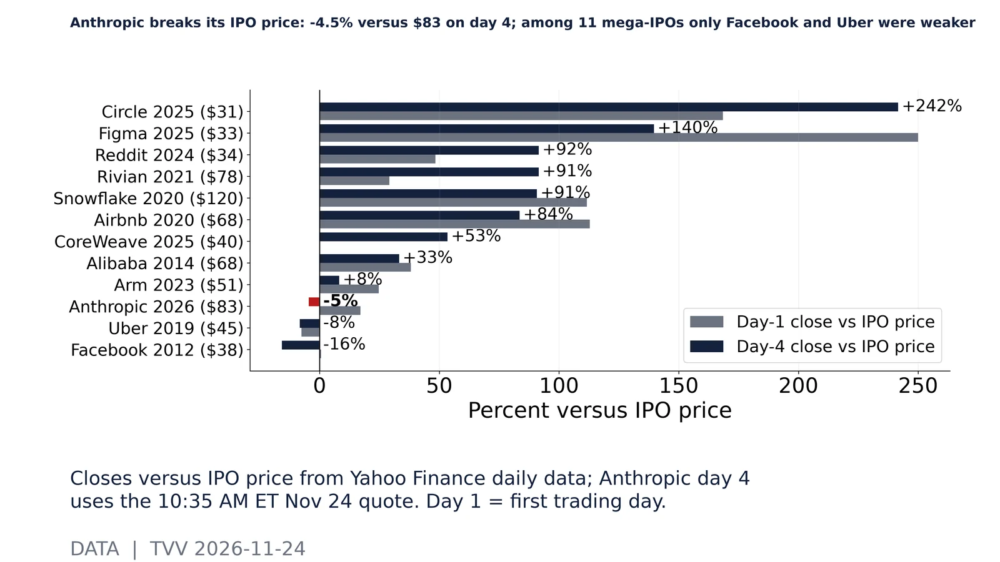
Anthropic breaks its IPO price: -4.5% versus $83 on day 4; among 11 mega-IPOs only Facebook and Uber were weaker. Closes versus IPO price from Yahoo Finance daily data; Anthropic day 4 uses the 10:35 AM ET Nov 24 quote. Day 1 = first trading day. Source: https://finance.yahoo.com/quote/ANT
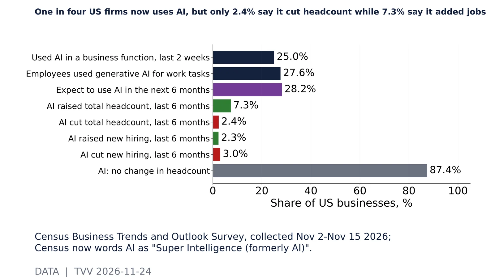
One in four US firms now uses AI, but only 2.4% say it cut headcount while 7.3% say it added jobs. Census Business Trends and Outlook Survey, collected Nov 2-Nov 15 2026; Census now words AI as "Super Intelligence (formerly AI)". Source: https://www.census.gov/hfp/btos/data_downloads